Vení a conocer lo que tenemos para ofrecer en nuestro país
Todas las opciones para disfrutar como mas te guste. Te invitamos a disfrutar de sus paisajes, turismo aventura, culturas, gastronomía, historia.
Experimenta Argentina
Provincias que no te podes perder...
 >
>
 >
>
¿Que te podemos ofrecer?
Region Patagonica
Region Patagonica
Cumbres de volcanes con géiseres y aguas termales; montañas de donde descienden enormes glaciares, lagos y ríos. Sus encantadores valles y aldeas de montaña rodeadas de bosques autóctonos milenarios, son lugares perfectos para descansar y vacacionar.
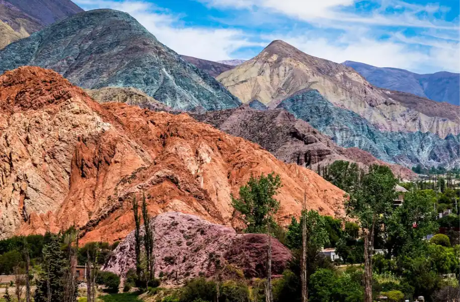
Region del NOA
Region del NOA
En este territorio la geografía presenta notables contrastes y una sublime belleza paisajística que enamora a cualquiera. La aridez de la Puna; la exuberante selva de las Yungas; las planicies santiagueñas casi a nivel del mar; y los más de 6.800 metros de la Cordillera de los Andes.
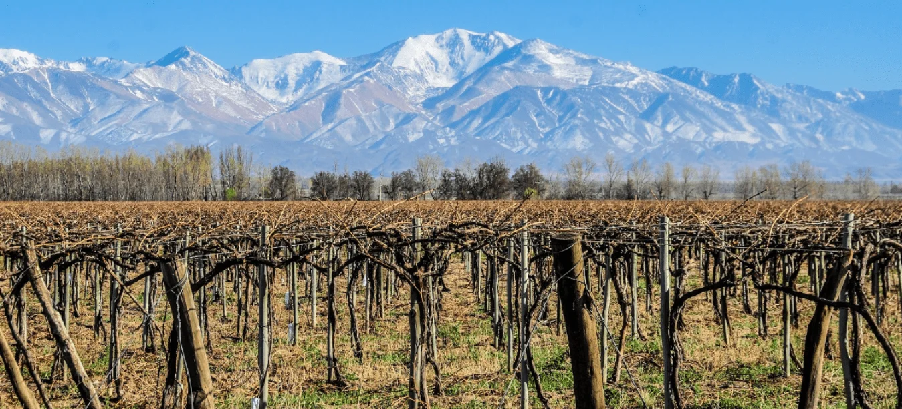
Region de Cuyo
Region de Cuyo
Destaca por la tranquilidad de sus ciudades y por sus oasis en medio de la aridez de llanuras y montañas. Pueden disfrutar del andinismo, esquí, pesca y deportes naúticos, y visitas a las principales bodegas que son catalogadas dentro de las mejores del mundo.
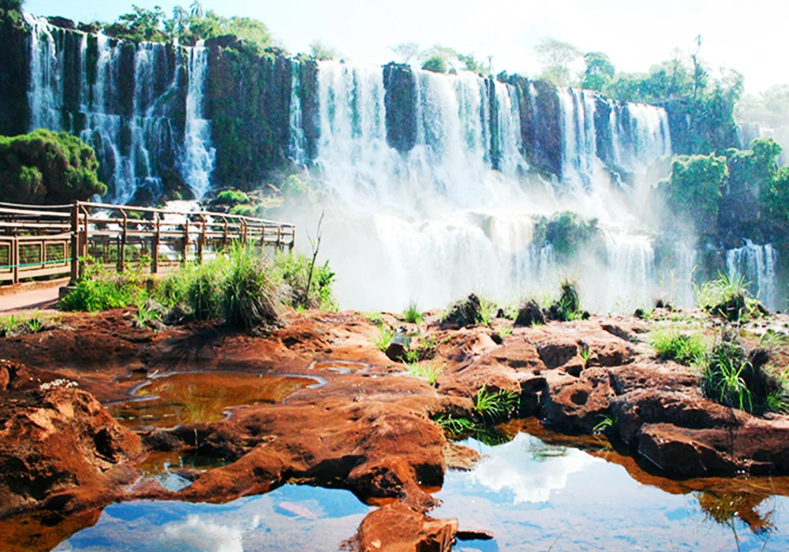
Litoral y Grandes Rios
Litoral y Grandes Rios
Siguiendo el curso del río Paraná, el Paraguay y el Uruguay, atravesada por incontables arroyos, esta región te propone tardes de playa y deportes acuáticos, cabalgatas, kayak, avistaje de aves y experiencias inolvidables en parques nacionales y reservas naturales.
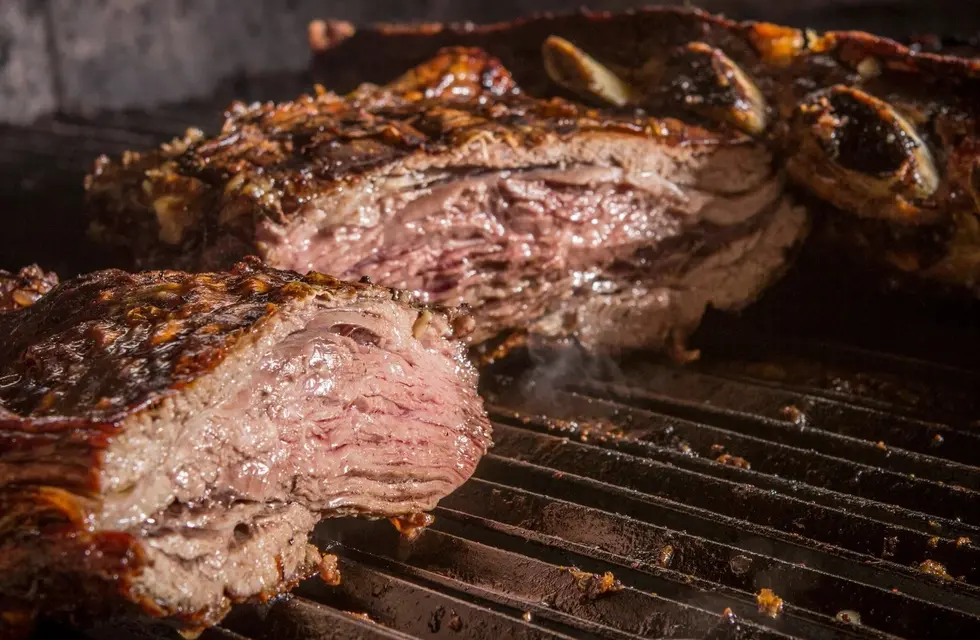
Asado Argentino
Asado Argentino
Es el plato típico argentino por excelencia y una de las delicias del país. Consiste en diferentes piezas de carne que, como su propio nombre indica, se asan a la brasa.El tipo de carne que se suele consumir es la de vaca, cordero o el cabrito.
Empanadas Argentinas
Empanadas Argentinas
De herencia española, este plato cuenta con numerosas variedades dependiendo de la región donde uno se encuentre. Una de las más populares es la de carne, que suele ir aderezada con cebolla, huevo duro y aceitunas.
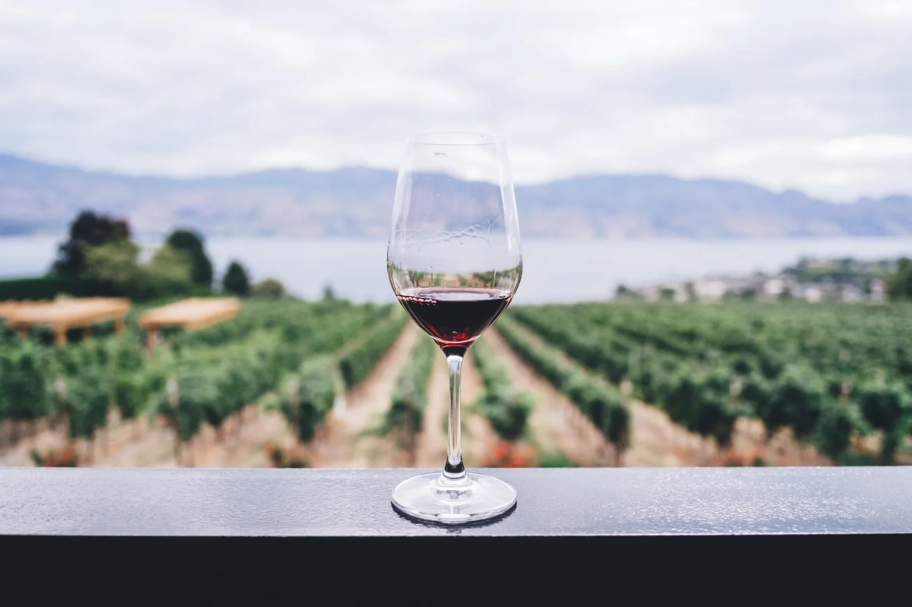
Vinos Argentinos
Vinos Argentinos
Nuestra vitivinicultura cuenta con más de cinco siglos de historia, integrando los saberes de los pueblos originarios con la tradición de los inmigrantes europeos, y representa la industria del sector más importante de América del Sur.

Dulce de Leche
Dulce de Leche
El dulce de leche es algo que está probablemente en la casa de todos los argentinos a lo largo del país. Se trata de un dulce tradicional hecho de leche de vaca, azúcar, esencia de vainilla y un poco de bicarbonato de sodio.
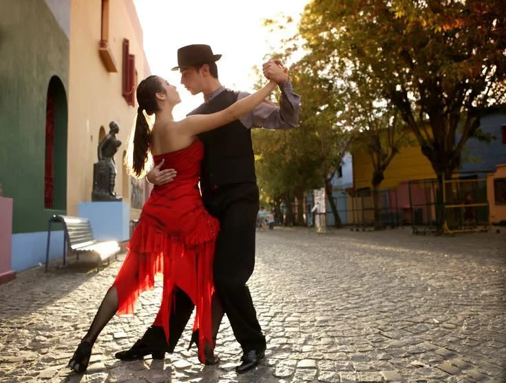>
Tango Argentino
Tango Argentino
El tango es una de las danzas típicas de Argentina y la más conocida sobre todo, internacionalmente. Si bien hoy en día los argentinos no tenemos la tradición de bailar tango, en los barrios porteños más turísticos, se puede ver gente bailando tango en las calles y en los clubes de tango.
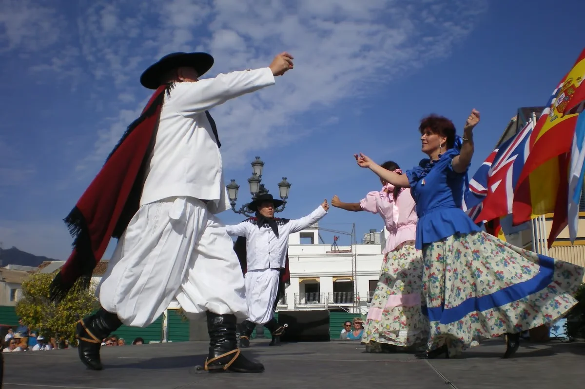
Folklore
Folklore
El folklore es la música típica de Argentina, tradicional de los gauchos y tiene varios subgéneros, que pertenecen a diferentes regiones del país. Sus melodías y danzas son una de las tradiciones argentinas más extendidas y dependiendo de las celebraciones pueden variar los tipos de bailes que se desarrollen.
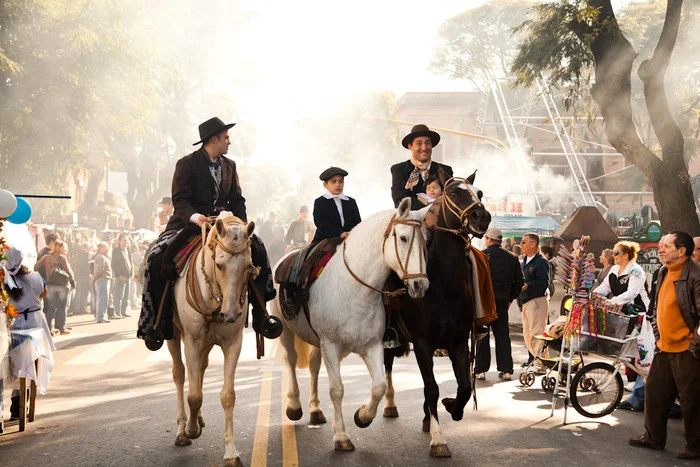
Día de la Tradición
Día de la Tradición
Las celebraciones del Día de la tradición se realizan en varios pueblos del país, donde representantes de distintas agrupaciones tradicionalistas recorren las calles vestidos de gauchos, montados a caballo, junto a espectáculos de música y bailes típicos.
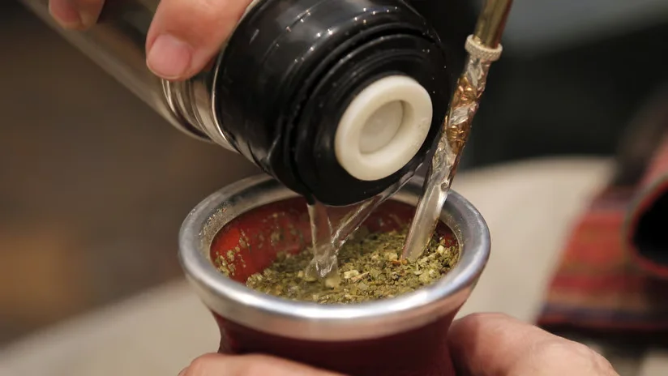
Compartir Mate
Compartir Mate
El mate es la infusión tradicional y favorita de todos los argentinos. Su sabor es amargo pero podes agregarle a gusto cualquier tipo de endulzante, ya sea azúcar, edulcorante o miel. Es el pretexto ideal para generar charlas con quienes tengas cerca.
Ciclismo
Ciclismo
Argentina ofrece grandes atractivos para disfrutar de la bicicleta. Solo se necesita un estado físico aceptable, paciencia y muchas ganas de disfrutar de los paisajes en silencio y despacio. Disponemos de rutas para todos los niveles de dificultad. Buenas bicis, repuestos, ropa, agua y comida, y… ¡a disfrutar!

Treeking y Senderismo
Treeking y Senderismo
Sentí la naturaleza bajo tus pies explorando la gran red de senderos que ofrece Argentina. Gracias a la infinidad de ambientes y geografías con que cuenta Argentina para vivenciar esta actividad, recargar energías y retornar renovados.
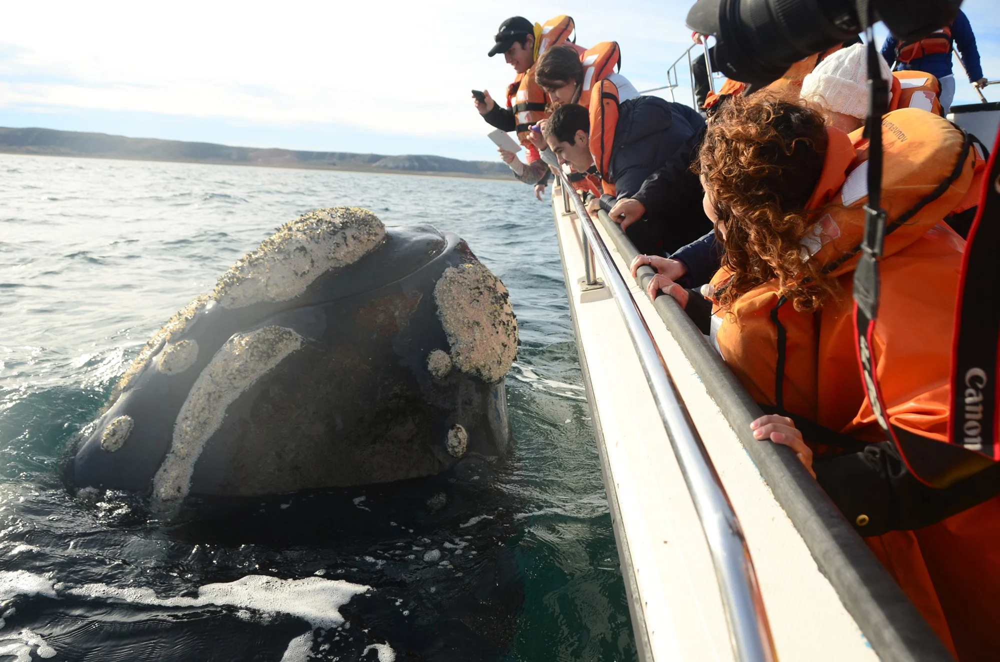
Naturaleza
Naturaleza
Ballenas, carpinchos, guanacos, orcas y mucho más. ¡En Argentina se vive una fauna increíble!. La variada geografía argentina y la existencia en ella de los más diferentes climas, hacen de este territorio el edén del avistaje de especimenes autóctonos.
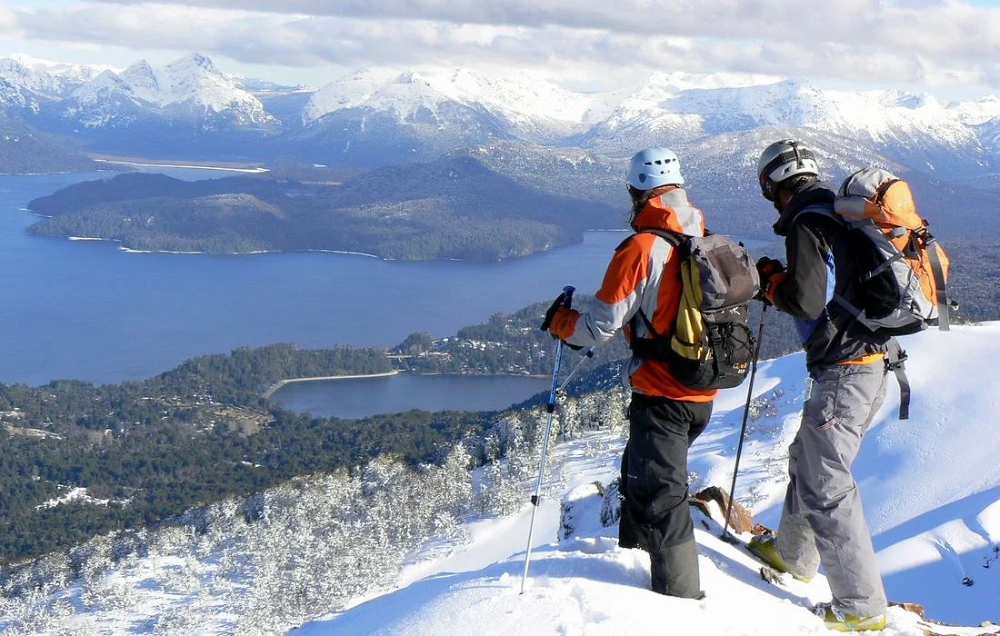
Temporada Invernal
Temporada Invernal
Descubrí cómo es vacacionar en la ciudad del fin del mundo, Ushuaia. Atrevete a escalar los cerros con más pendientes para practicar Snowboard en Bariloche. Sentí cómo es vivir dentro de una ciudad encantada como Villa La Angostura. Emocionate a cada paso por una de las maravillas del mundo, El Glaciar Perito Moreno.